Transport Processes
Created Saturday 19 March 2022
@GEOLOGY @YEAR3 @SUBSURFACE_SOLUTE_TRANSPORT
- @Advection = @convection (flowing water carries the solutes in the direction of flow)
- @Diffusion (the spread of solutes from high to low concentration)
- @Dispersion ~ diffusion but due to local variations in solvent velocity at a microscopic (i.e. pore scale) scale.
- @Adsorption (≠ absorption!) (solute molecules attach to the solid phase). The reverse (when molecules in the solid phase are released into the liquid phase) is called @desoprtion
- Decay from chemical reactions, biological activity or radioactivity.
Advection
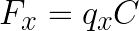
 = the amount of solute transported in a specific area of porous material.
= the amount of solute transported in a specific area of porous material.
where 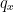= the discharge of the solvent and 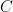=the concentration
Mean apparent velocity:
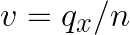
where qx = the solvent discharge and n is the porosity of the material it is flowing through.
Residence time in a layer:
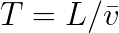
where:
T=the residence time of the solute
L= the thickness of the layer
= the @mean_apparent_velocity
Darcy's Law
@Darcys_Law :
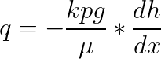
where :
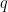 =flux of material through the porous material
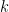 = the permeability
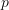 = the permeability
= the dynamic viscosity
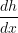 = the hydraulic gradient
Darcy's law specifically for hydraulic conductivity:
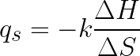
where =x,y or z and 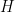= the amount of head
The residence time of a solute in a layer of material where 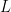 = the thickness of the layer.
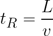
Diffusion
Diffusion is not generally significant, unless the groundwater velocity is exceptionally low.
@Ficks_law (which applies in bulk water)
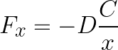
where:
 = the diffusion flux
= the diffusion flux
= @Diffussion_coefficient (higher D will cause the solute to spread faster)
 = concentration
= concentration
 =length
=length
In a porous material:
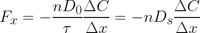
where = @tortuosity and =porosity (this removes any material in the solid phase out of the equation so that only the pores are included).
Fick's second law predicts how diffusion will change over time:
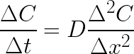
where:
 =concentration
=concentration
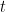 =time
 =diffusion coefficient
=diffusion coefficient
=length
Dispersion
Dispersion and diffusion are usually combined into one equation (the @diffusion_dispersion_coefficient )
@dispersion is the spreading of a solute due to local microscopic variations in groundwater velocity. It comes from non uniformity of the spaces between the grains in the soil.
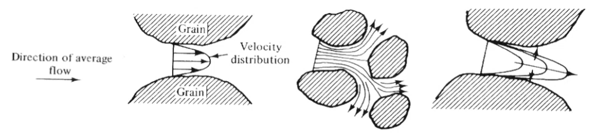
Adsorption/ Desportion
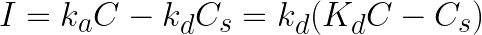
where:
 are @Adsorption and @desoprtion coefficients
are @Adsorption and @desoprtion coefficients
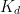 = the @Bulk_distribution_coefficient
Decay
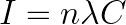 where 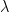= the @decay_constant
Convection dispersion equation
@convection_dispersion_equation
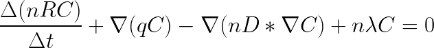
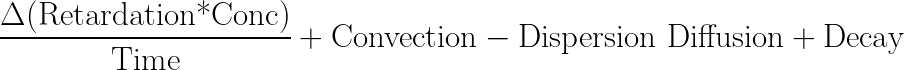
where 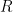 = the @retardation_factor (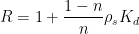)
Breakthrough curves
@Breakthrough_curves show the concentration over time
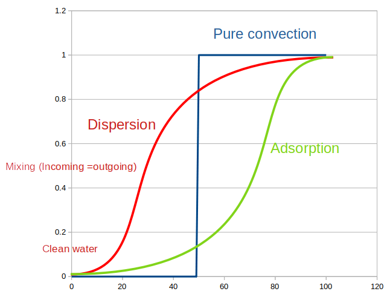
Piston Flow: The solution with the concentrated substance moves with the flow. As soon as the sensor detects it the concentration jumps. üéûÔ∏è./Piston Flow.webm
Diffusion coefficient (D) =0
Dispersion-Diffusion: there is no sharp front but some mixing. There is initially clean water but a period where there is still mixing happening. The higher the diffusion coefficient, the more spreading happens.üéûÔ∏è./Dispersion.webm
D>0<1
The curve for absorption is shifted to the right because the @retardation_factor is >1